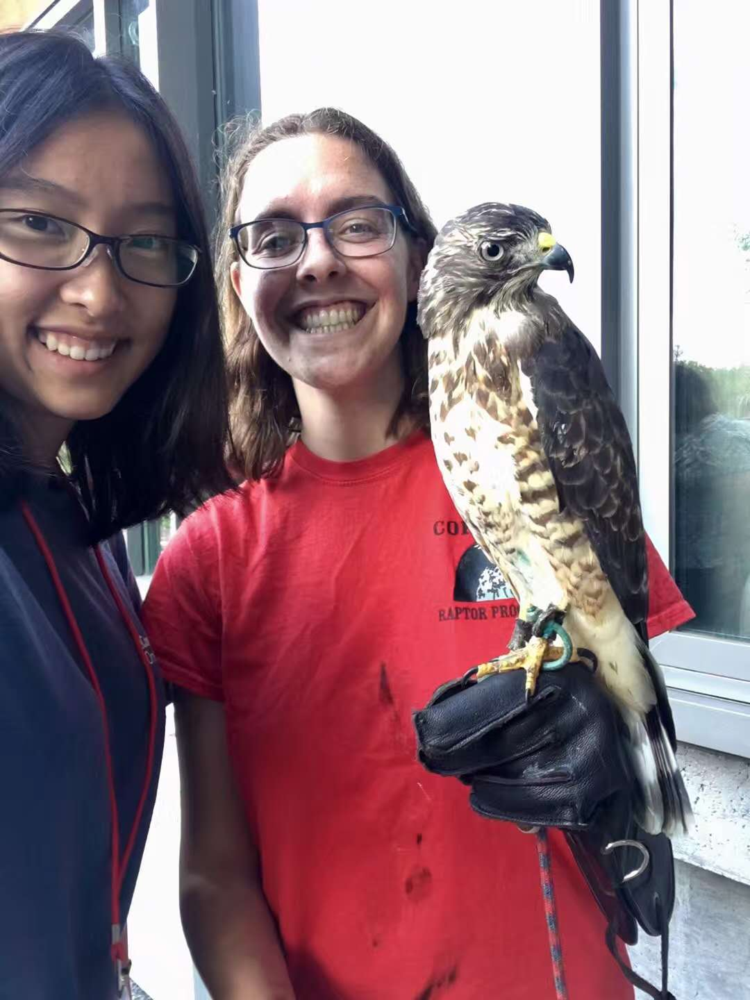
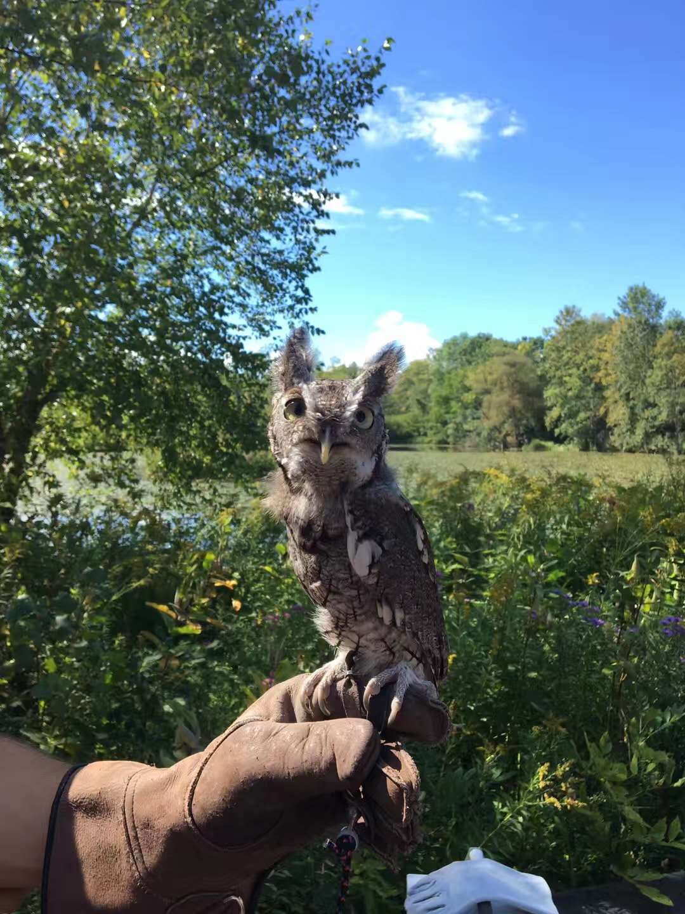
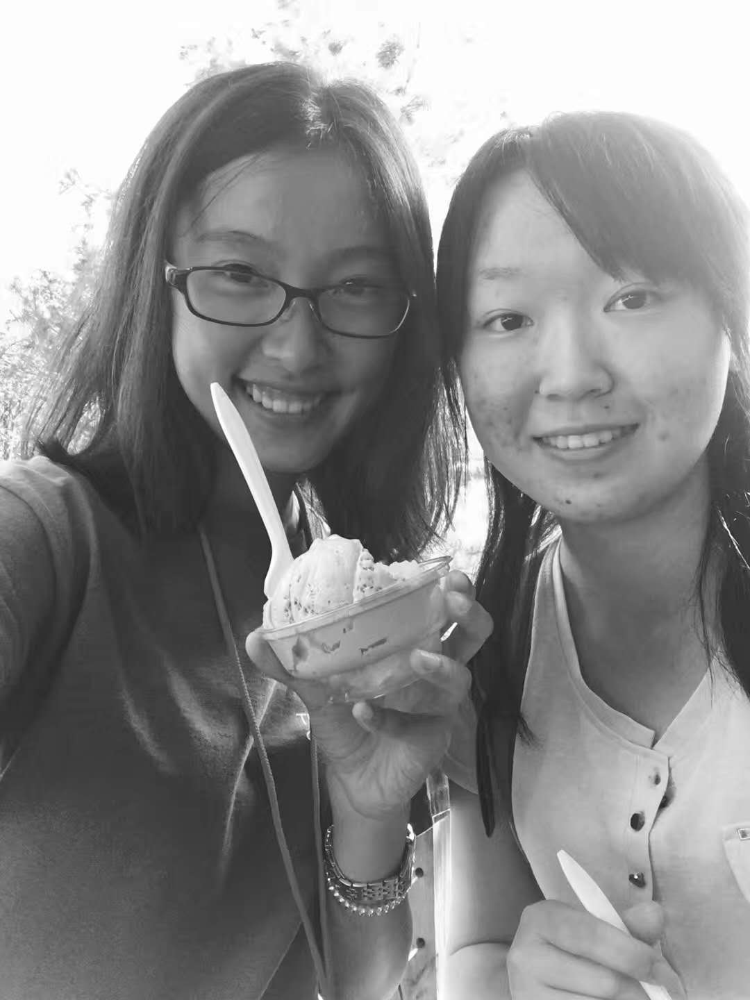
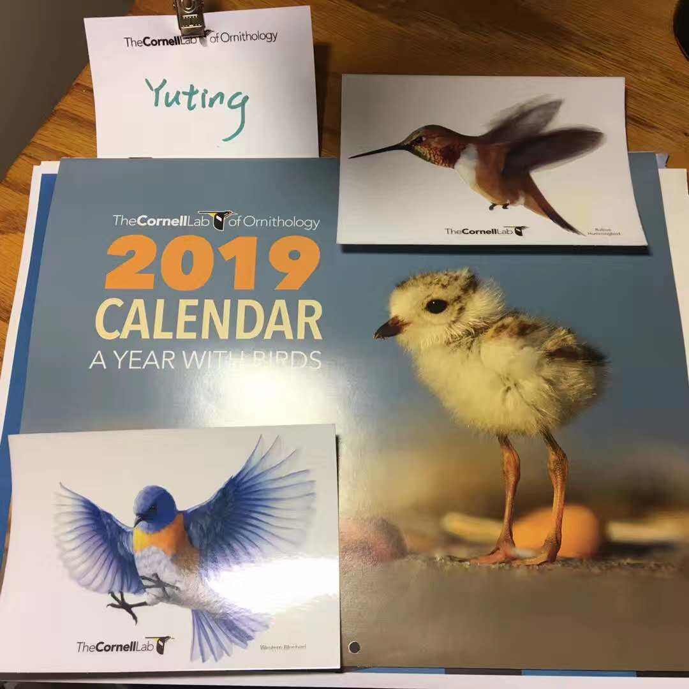
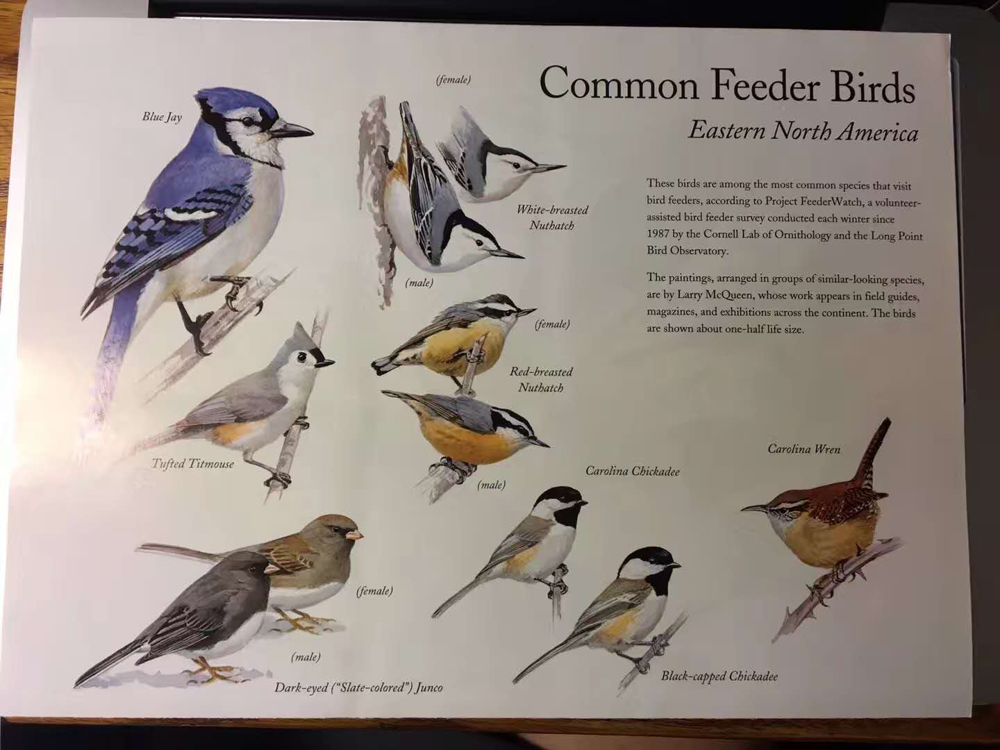
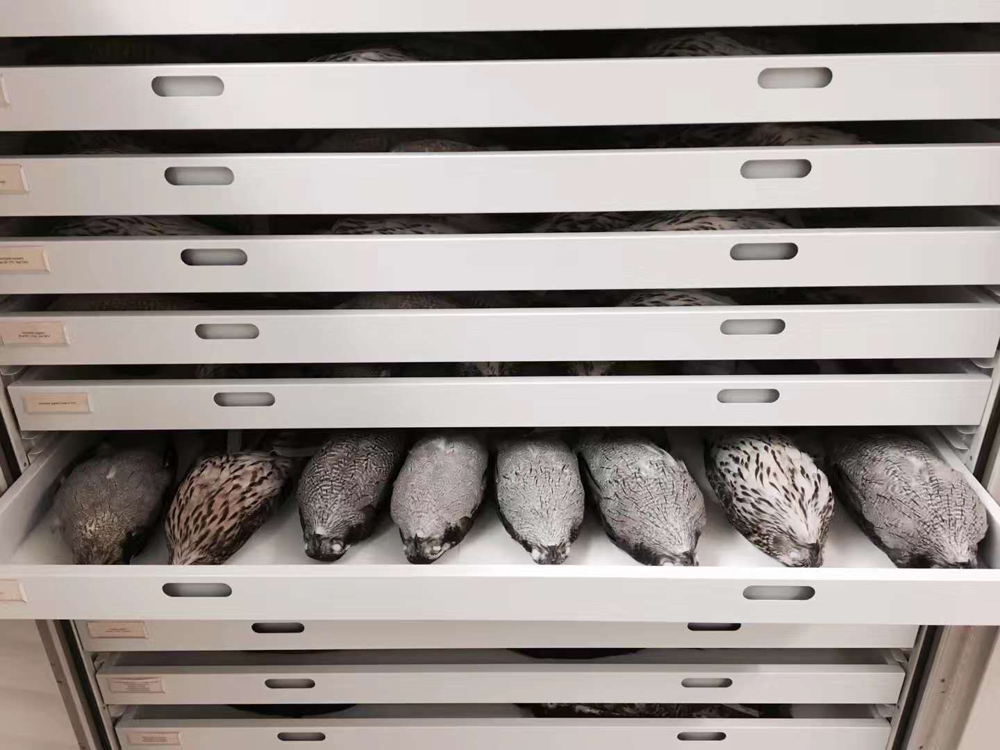
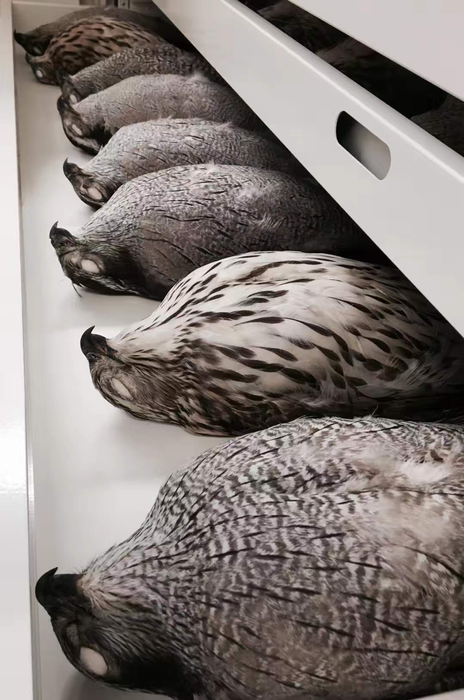
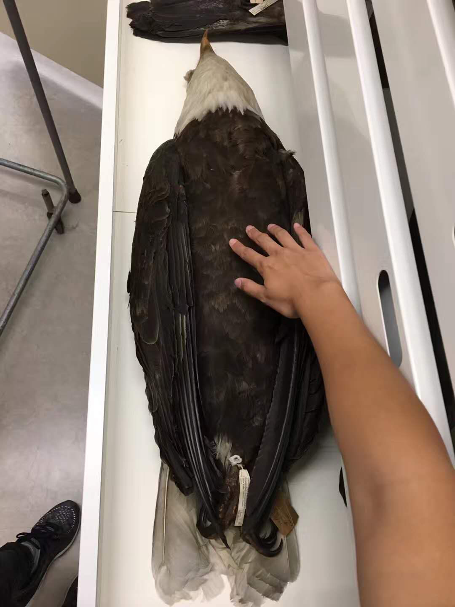
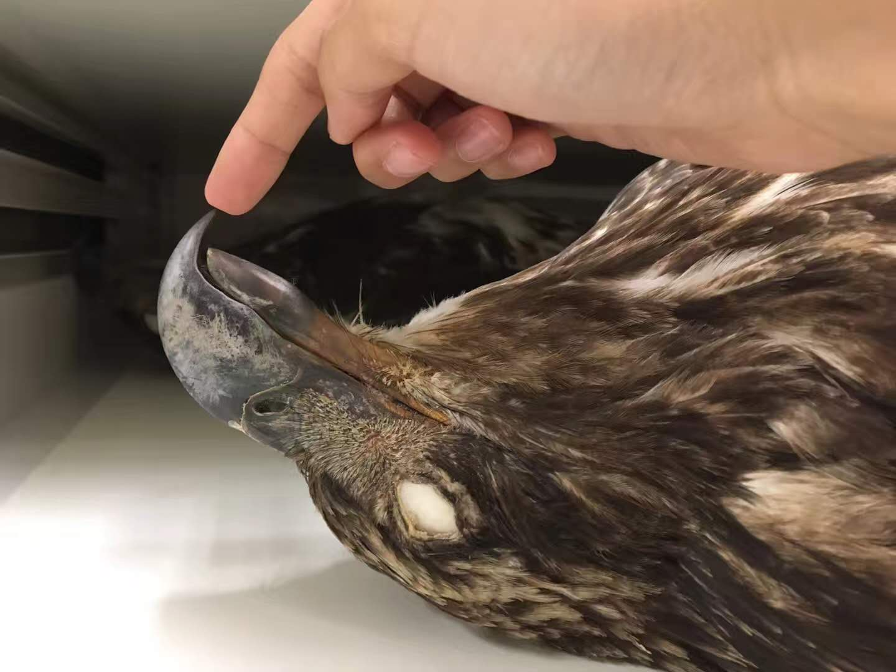

邓昱婷(中国农大)
Migration Celebration!
今年志愿的station是向大家普及做一个window deterrent防止鸟撞到玻璃上是多么的容易却efficient, 一下子就成了最受小孩子欢迎的工作坊。希望明年能有资格去带领bird walk或者workshop Sam的Broad-winged Hawk ๑′ㅂ`๑ 发现Raptor Program都是lab的小伙伴真的是很酷！图二的Eastern Screech-Owl已经非常神经紧张了，因为是已经受伤到没有办法再放回野外了（虽然感觉如果是猛禽救助中心的话有可能有办法呢），所以才可以日常训练他们并用来做科普。
全文









美国 · 伊萨卡 · Cornell Lab of Ornithology